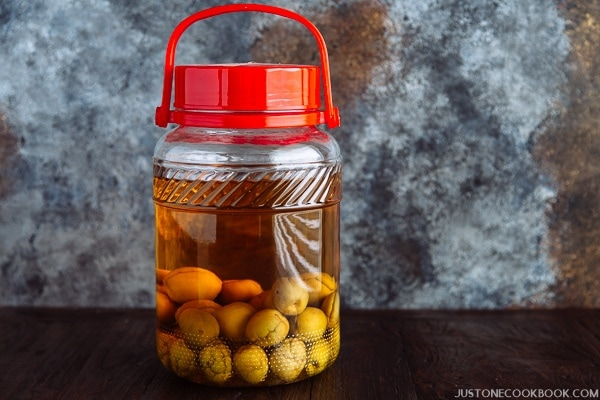

Homemade Umeshu
Umeshu is a Japanese plum liquor you can make at home
If you enjoy a strong, but very sweet, drink on ice, then umeshu may be the drink for you.
Made by infusing shochu liquor with fresh peaches, at an alcohol consentration of around 15%, umeshu is at least as strong as most wines.
Ingredients
- Traditional shochu liquor
- Fresh peaches
- Sugar
- A large plastic jar
Steps
- Wash peaches
- Add peaches, shochu, and sugar to jar
- Let sit for like a month
- Serve on ice or with a soda chaser